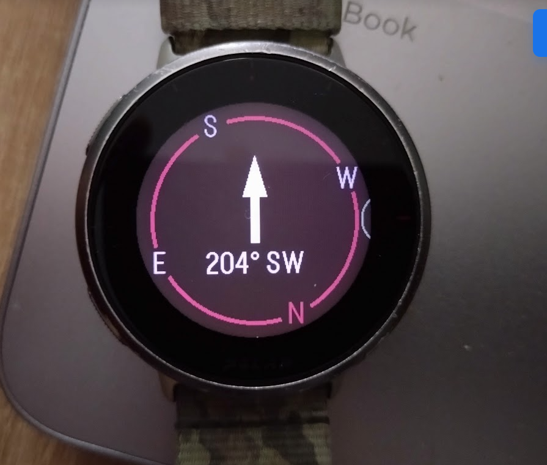

Kompassi ja kartta:
Ensin valitaan suunta, jonne kulkea
Sitten määritellään suunta kartalla
Määrityksessä otetaan huomioon karttapohjoinen
Reading progress:
85%

Kompassi
TAKAISIN ALKUUN
Suunnistaminen älykellolla